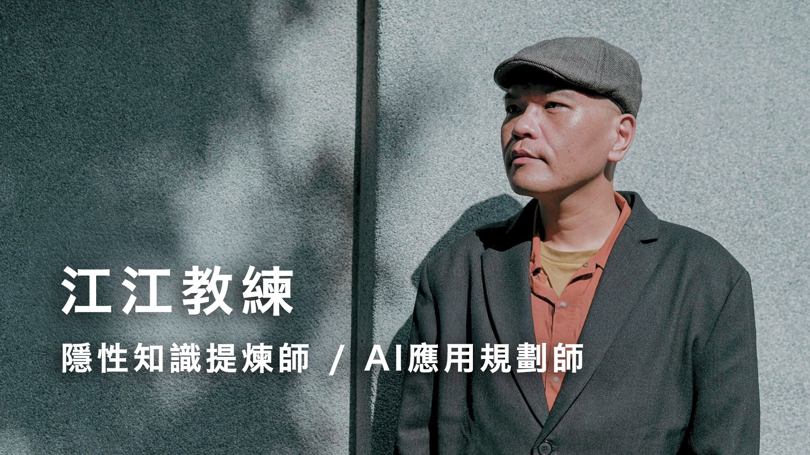

OGSM 是經典策略管理框架，把「我想做的事」拆成四層：
| 字母 | 意思 | 在問什麼 |
|---|---|---|
| O | Objective 目的 | 為什麼要做？成功是什麼樣子？ |
| G | Goal 目標 | 要達成什麼可衡量的成果？ |
| S | Strategy 策略 | 用什麼方法達成？ |
| M | Measure 衡量 | 怎麼知道有沒有走在軌道上？ |
會用 AI 的第一階段，是知道「什麼東西可以丟給 AI」（OGSM 這類公開框架就是）。
更厲害的人，是知道「什麼東西 AI 不會知道」——這部分你不主動補，AI 永遠生不出對的答案。
AI 不會知道的，主要是這三類：
我是江江教練，隱性知識提煉師、AI 應用規劃師。簡單說，幫專業工作者把腦袋裡的東西提煉成 AI 可以用的形式。

類比：這就像拍攝自媒體。數位單眼時代要學快門對焦，手機時代會拍就好。AI 也進入同樣的轉折。
Q1：大家知道什麼是 Vibe Coding 嗎？
Q2：大家知道什麼是 Agent 嗎？
Q3：會不會覺得一堆 AI 工具學不完？
很多人卡在「我要學會這個工具，才能解決我的問題」。但你回到第一性原理問——「我要解決的是什麼問題？」——你會發現很多時候，你根本不需要學那個工具，AI 直接幫你做就好。
為什麼一人公司、微型創業最需要這個觀念：你最缺的不是學更多工具，是把自己想清楚、寫清楚，讓 AI 照你的規則做事。
我自己是一個發想很快的人。以前驗證新點子的方式就是，想到一個。約人聊一聊。看反應。再修。
那時候我覺得：「不去聊怎麼知道？而且去聊我也學到事情。」
但這樣到處跑，很累。
現在我習慣是，有一個想法，先丟給 AI 顧問問一輪。
大部分問題我自己都答不出來。連最基本的都答不出來，那就不用玩了。
光是這幾段，就省下大量奔波的時間，更重要的是保住了信任額度。
AI 在這裡做的事，是在你還沒花社交成本之前，先逼你回答最基本的問題。
它的提問，就是真實人類也會問你的問題。連基本問題都答不出來＝你還沒準備好出去聊。這是創業者最容易忽略的「事前過濾」。
很簡單。比如我現在有一個想法，叫 AI 模擬產業內的人來問我。
不需要找多大的專家。也不用先去拜訪那個產業裡誰是大神。
想當場感受「AI 顧問靈魂拷問你」是什麼感覺？這兩個我都已經做好了，學員可以馬上點：
所謂的翻譯，不只是中翻英、英翻中。
更重要的是這兩種：
今天兩小時就在演示這兩件事怎麼用 AI 做。
大家覺得市場有需求，但真的有嗎？把模糊的點子，用 AI 顧問對話一輪 → 變成清楚的商業假設。
打開 Mika 桌面寵物開發計畫 .md 給學員看。重點不是內容，是讓學員感受到：
AI 顧問不是用來發想的，是用來拷問已經寫好的版本。
用兩個方向不同的 AI 顧問拷問同一份企劃，看哪些地方兩邊都指到，那就是真盲點。
🎬 我現場示範
切換技能包，丟同一份企劃，問同一個問題。但這次的視角是「真實的潛在客戶」。
| ❌ 不好的問題（問未來假設） | ✅ 好的問題（問過去事實） |
|---|---|
| 你想要這個產品有什麼功能？ | 你上次遇到這個問題是怎麼處理的？花多久？ |
| 你願意花多少錢？ | 你過去一年有沒有付費買工具來解這個問題？多少錢？ |
| 你覺得這個功能重要嗎？ | 這個問題上次發生時，直接造成什麼後果？ |
| 你願意花錢上 AI 課嗎？ | 你上一次花錢上課或買書是什麼時候？花多少錢？ |
看出差別了嗎？不好的問題問「未來假設」，得到的都是禮貌答案；好的問題問「過去事實」，事實才會誠實。
同一份企劃，不同視角會看到不同的東西。納瓦爾看的是十年後的價值累積，真實需求調查看的是「現在到底有沒有人會買單」。兩個都需要。
2026 年 3 月，我把納瓦爾 AI 顧問裝進電腦，讓他去讀我過去半年所有工作日記（幾千份）。然後問他：「我最近的方向對嗎？」
我以為自己很努力，到 3 月底才發現自己忙到又偏離主軸。這種盲點自己看不到，朋友也不會直接跟你說。但 AI 顧問可以——它讀完你所有資料、沒有情面包袱、站在大師立場說話、不會客氣。
兩個技能包都已公開，課堂可以直接點開試用，也可以下載完整版裝進自己的 AI。
怎麼用 AI 找市場行情和競品？搭配講師兩次創業（影像工作室、AI 教練）的真實經驗，分享踩過的坑。
現在市場很多爆紅的 AI 產品（小龍蝦、各種 Agent 工具），看到容易焦慮。真正要學的不是工具，是機制：
示範拆解的思路（不是答案）。學員回家可以自己套用。
講「做問卷調查」聽起來很簡單，但大部分人問的問卷都問錯了。會得到一堆禮貌答案，跟現實沒關係。
大家都會說：「好棒棒、感覺很需要、3,980 我願意付！」
結果實際開賣，沒人下單。
問過去事實，不問未來假設。
事實才會誠實，假設都是禮貌。
📖 方格子文章：客戶都說很棒，但就是不買單？真實需求調查法
⭐ 完整版技能包（GitHub 開源）：github.com/Jiang-Yude/real-needs-investigation
AI 模擬訪談是「用嘴測」。再進一步，是用 AI 直接做出視覺看得到的假產品，丟到真人面前看反應。
現在用 AI 生成圖片很方便，我這堂課不細講操作。重點是觀念：不要等產品做好才測，先用 AI 做出視覺，先測。
這個方法在 UX 領域有個正式名字叫「Wizard of Oz MVP（綠野仙蹤式驗證）」——前台讓使用者以為是 AI 服務，後台其實是真人在跑。
幾個有名的真實案例：
這就是 MVP 裡叫「Concierge MVP（手動服務 MVP）」的經典做法。用真人手動撐起後台，先驗證需求，再去開發系統。
這是把上面的方法，套在我自己身上的真實案例。同一套底層產品，兩個不同的對外形象，反應完全不同。
一開始 AI 辦公室定價 3,980，包山包海一堆功能。沒人理。
失敗訊號：「太多功能用不到。蘋果手機那麼貴是因為品牌，我沒有品牌。」
改成「咪卡貓咪管家」形象。
突然抓到了：「會找我裝機的大概就是 4-50 歲女生 → 賣的是輕鬆療癒的貓咪感。」
從「賣 AI 辦公室」 → 改成「賣 AI 咪卡管家，他會幫你整理料」。
實裝過程發現：「兩三小時學員就累了。」
結論：先賣最基本的 AI 辦公室 + 概念裝潢就好（1,000 元）。進階功能後續線上再聊。
關鍵體悟：只要 AI 辦公室基底裝好，後面教什麼都很簡單。
我會拿 AI 辦公室的網頁給大家看。我學到一招：
所以我一開始設定 AI 辦公室的時候，就有一招很聰明的安排：
「下載安裝可以先拍五分鐘的教學影片。」我在線上課其實就是教學影片的概念，所以這段我就知道可以拍成教學影片。
裝完之後不會動怎麼辦？我說：「我在旁邊引導。」
學員說：「對啊，那是因為你在旁邊教啊。」
這樣我就知道——沒人在旁邊就不會用。
所以我說：「那你現在想像我就是 AI 助教。我直接模擬，你會下什麼指令？」
這個過程，其實就是把我跟學員的互動，訓練成 AI 助教。等學員裝好之後，AI 助教就會跑出來幫忙做事。
後來發現 AI 辦公室太抽象，所以我換咪卡。換咪卡之後更簡單了：
我直接給學員看一張圖：「這是咪卡的樣子，咪卡可以幫你做這些事。」
大家覺得「好多了，簡單很多了。」
你看，我甚至更懶。連社群網站、官方 LINE 我都還沒做，就只是先拿一張圖給大家看，就驗證了——AI 辦公室目前還是要實體裝機，裝到一定程度後，再把這些經驗設計成技能包跟 AI 助教，然後就是咪卡的樣子。
不只分析，用 AI 快速做出可賣的東西。今晚下課，學員就能丟到朋友圈試反應。
有時候我發了一篇自己覺得超讚的內容，結果沒反應。
這時我會請 AI 幫我翻譯。請它把我寫的東西，翻成「正在經歷這個問題的人」看到會說：「誒，這我，我要。」
「翻譯」是這堂課貫穿到底的核心能力——
都是同一個能力。
脆文（最便宜的水溫測試）
↓ 反應好的主題往下推
免費講座（中等成本，看會不會爆滿）
↓ 免費都爆滿不了，就不用玩了
付費課程（最貴，但確定有人要）
學員帶回：改標題＋踩雷檢查技能包 + Portaly 設定流程文件。
順便跟大家講，我這堂免費限量角度其實也是一個 MVP，也是一個小單元的測試。
其實像我今天這堂課 5/5 講座，當時規劃時，我就把裡面有一部分內容直接拆成 5/3 的免費講座。
這樣的好處：5/3 講得順了，今天就可以再講一段就好。同一份內容用兩次。
這個東西如果大家很有興趣，「把書本、影片、PDF 變成你的 AI 顧問」其實也可以獨立再開一個小的課程工作坊。
→ 課程拆細的好處：每一層都能找到不同階段的人，免費 → 1,000 → 3,980 → 30,000 顧問案。
我現在好像有十幾二十個技能包，看起來很多。但其實就是我自己原本常用的一兩個流程而已。我只是把它拆得很細。
為什麼拆細？兩個原因：
用一句話說：我把一個整合流程拆成 10 個步驟，變成 10 個技能包。我自己原本是這 10 個步驟整合成一整個技能包。
這就是卡片盒筆記法的原子化觀念。我這堂課不細講，大家可以自己搜尋。
因為內容能原子化，所以未來主題能彈性擴展：
我覺得這個之後再外加課程。一開始包山包海 3,980 雖然划算，但學員用不到就沒意義。1,000 塊先讓大家裝機 + 拿一大堆免費技能包，門檻低很多。
這段我用 5/3 講座完整版簡報直接帶過，下面三個階段一次看完。
下面這份是我 5/3 免費線上講座的完整簡報。從 ChatGPT 專案模式 → NotebookLM → 桌面版 Agent 三層進階一次看完。
🎯 嵌入無法看？直接打開：把書、影片、PDF 變成你的 AI 顧問（完整版）
資料還沒整理好之前，Claude 就是一小時 6,000 塊的講師幫你整理桌面，浪費。
Codex 免費版就能試，門檻低、試錯成本低。資料整理好再上 Claude。
有個同學裝了 agency-agents 這個套件，一口氣多了 40 個 AI 角色。
裝完之後他傻眼——40 個記不住，跑來跟我要一個「AI 指揮官」幫他管這 40 個。
我跟他說：你真正需要的不是「多一個指揮官」，而是——
關鍵句：
→ 這個案例正好是整堂課主軸的反向示範——同學一開始走錯路，是「去學工具」（記住 40 個 AI 是誰）。
正確的方向是「讓工具來學你」（重組成你原本的流程）。
→ 這也是為什麼前面強調「文件就是系統」——你的工作流程才是核心，AI 角色只是進來補位的人。
所以 AI 辦公室產品分三層——讓不同階段的人都接得住：
| 階段 | 名稱 | 時長 | 價位 | 對象 |
|---|---|---|---|---|
| L1 | 完全零基礎裝機 | 3 小時 | 1,000 元 / 人 | 完全沒用 AI 的人 |
| L2 | AI 工作流工作坊 | 5 小時 | 3,980 元 / 人 | 有基礎、想優化現有工作流 |
| L3 | 開創型 AI 系統一對一 | 客製 | 30,000 元 / 案起 | 有獨特系統者 |
| 今天做的事 | 背後在演示什麼 |
|---|---|
| AI 顧問靈魂拷問 | 什麼是技能包＋什麼是 AI 輔助決策 |
| 看別人 MVP + AI 辦公室演化故事 | 什麼叫「看本質不看表象」 |
| 用 AI 做 MVP + 翻譯給受眾 | 行銷是輔助決策的副產品 |
| 整理資料建 AI 助理 | 開始應用技能包｜把我的經驗、知識整理成 AI 用的操作手冊 |
| 這整堂兩小時 | 江江在示範把自己的服務、知識、概念產品化，可拆解、重組、複製，跟他人組合 |
手把手教學：教大家安裝 CodeX，從零開始
技能包應用：怎麼把今天的技能包真的接到自己的工作流
工作流設定：怎麼配置自己的 AI 助理
為什麼線上：零基礎裝機現場示範＋線上比實體更彈性
有興趣的可以加入 江江 LINE 社群，公布日期會貼在那。
https://line.me/R/ti/g2/V63_43ngbs_kq1mpVc9LlxXB-1kchHnwdsy3WQ
順便給大家三篇我寫過的脆文，講 ChatGPT 生圖怎麼做出有自己風格、又穩定的成果：
今天 5/5 這堂是「創業點子驗證術」。
7 月我會再開一堂行銷課，把「驗證之後怎麼推、怎麼翻譯給受眾、怎麼把 AI 生圖跟貼文寫作整套接起來」一次教完。
想到時候來上課的，課後 LINE 社群會發消息。